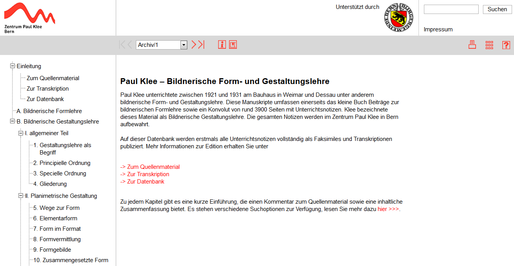
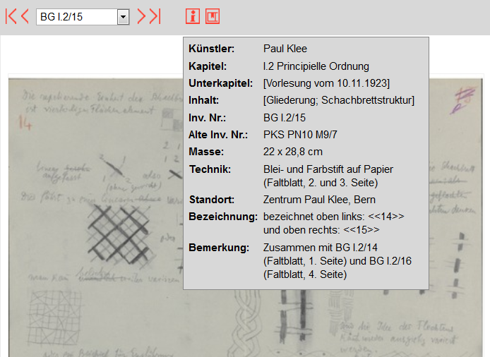
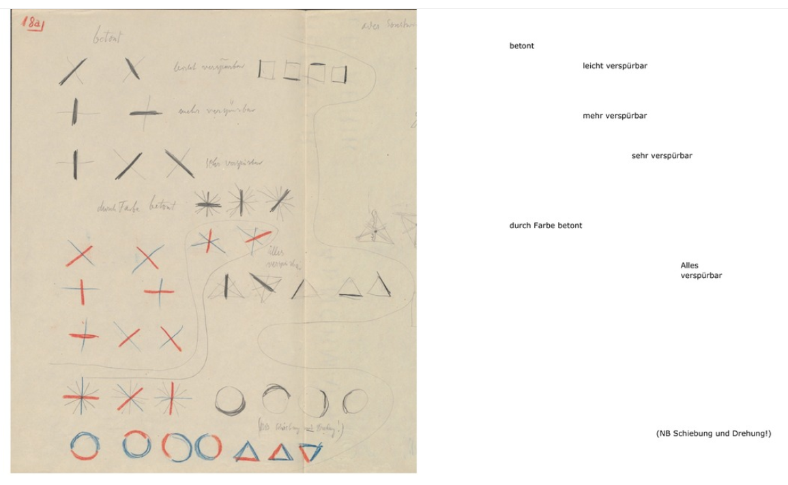
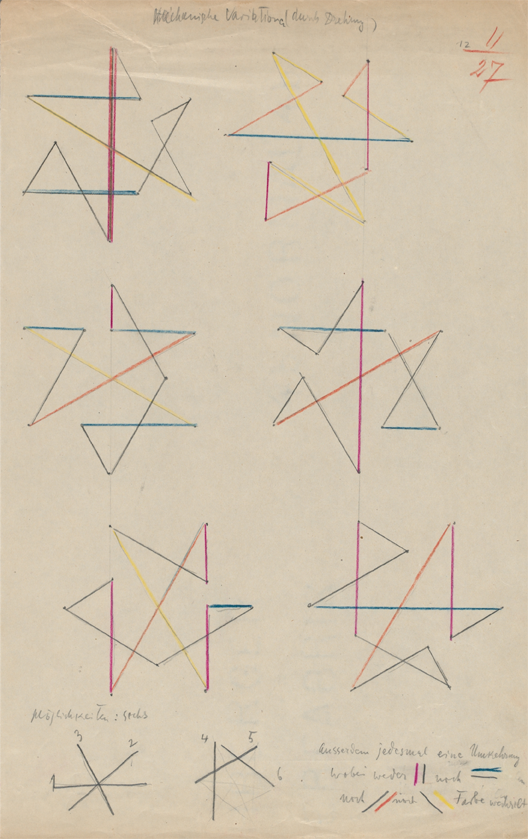
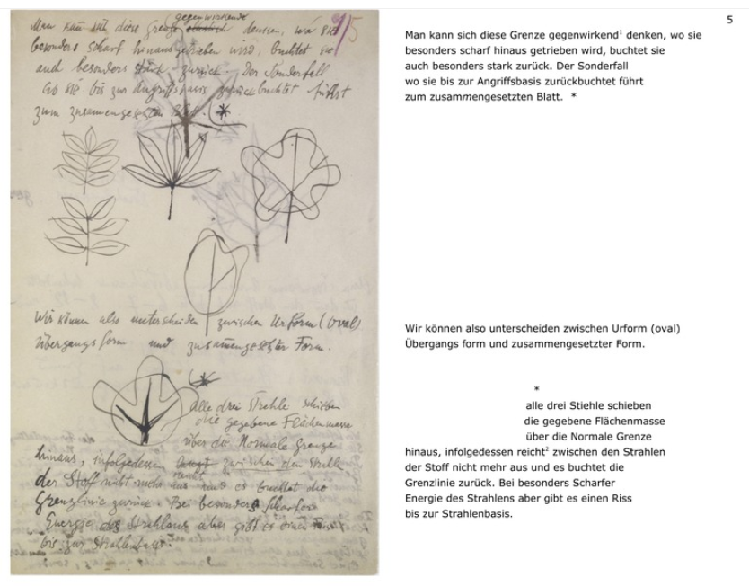
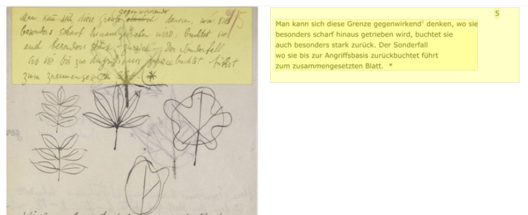
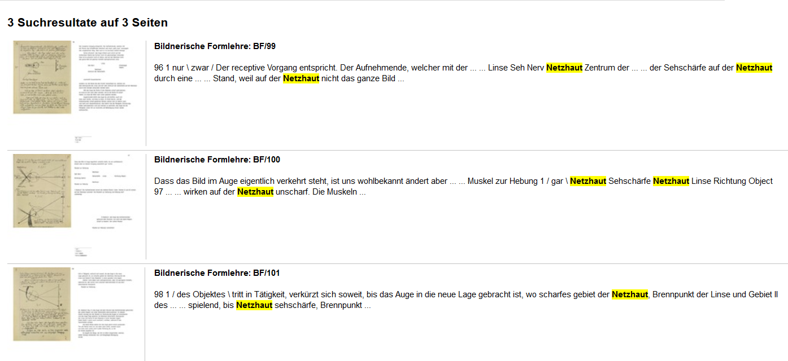
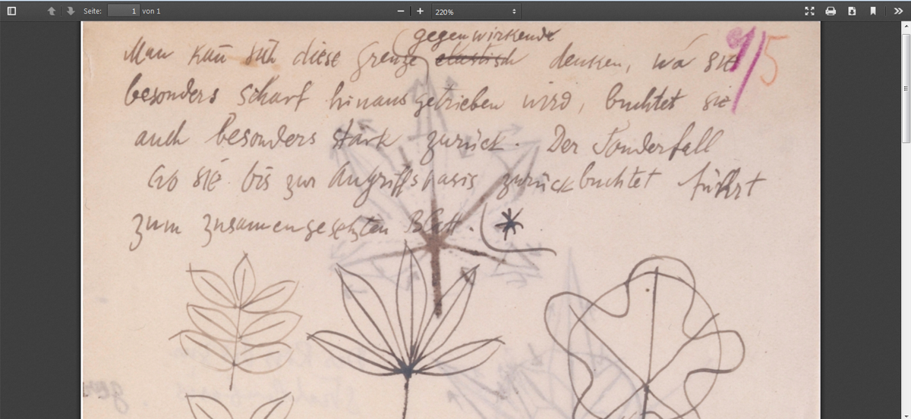

Paul Klee – Bildnerische Form- und Gestaltungslehre
Table of Contents
Abstract
This paper reviews the digital edition of Paul Klee’s Bildnerische Form- und Gestaltungslehre, the collection of his important teaching notes during his time at the Bauhaus as facsimile and transcript. A major challenge of this project is the dynamic nature of the material: the teaching material was restructured, revised and subsequently reused several times. While the transcriptions are unfortunately only available as images, which severely limits the possibilities for re-use of the research data, the edition nevertheless provides a vital source for art-historical research on an artist who influenced a generation of successors.
Einleitung

Die vorliegende Edition des Zentrums Paul Klee stellt erstmals die gesamten Unterrichtsnotizen zur Bildnerischen Form- und Gestaltungslehre von Paul Klee als Faksimiles und Transkriptionen in digitaler Form zur Verfügung.1 Sie bietet damit eine für die kunsthistorische Forschung unverzichtbare Quelle, die Einblick in die Arbeit des bedeutenden Malers und Grafikers Paul Klee (1879-1949) gewährt.
Bis zur Veröffentlichung der Datenbank war besonders die Rekonstruktion der Notizen zur bildnerischen Gestaltungslehre ausständig, was nicht zuletzt an dem prozesshaften Charakter des Materials lag. Mit diesem Editionsprojekt ist es gelungen, die bisher nur schwer verfügbaren Unterrichtsnotizen einer breiten Öffentlichkeit zugänglich zu machen, was sich auch aufgrund des Materialumfangs als Druckedition nur schwer bewältigen ließe.
Gegenstand der Edition
Seinen ersten Vortragszyklus, den Paul Klee zwischen 1921 und 1922 am Bauhaus abhielt, skizzierte er auf 192 Seiten in einem von ihm paginierten Buch und bezeichnete es mit dem Titel Beiträge zur bildnerischen Formlehre. Auszüge daraus publizierte Klee 1925 in komprimierter Form als Pädagogisches Skizzenbuch in der Reihe der Bauhausbücher (Zentrum Paul Klee 2012a). Die Themen seines Unterrichts reichten von der Auseinandersetzung mit der Linie, der Perspektive, dem Gleichgewicht und der Komposition, bis hin zur Farbenlehre.
Paul Klees Bildnerische Gestaltungslehre wurde von ihm selbst in 24 Kapiteln angelegt. Der Allgemeine Teil beschäftigt sich mit den Grundsätzen der bildnerischen Gestaltung. Die Planimetrische Gestaltung setzt sich mit den zweidimensionalen Formen ausgehend von Kreis, Dreieck und Quadrat auseinander. Die Stereometrische Gestaltung widmet sich der Darstellung dreidimensionaler Körper wie Kubus, Pyramide, Oktaeder, Hexaeder, Kugel und Kegel (Zentrum Paul Klee 2012a).
Während sich die Bildnerische Formlehre auf ein von Paul Klee handschriftlich verfasstes Notizbuch mit etwa 200 Seiten beschränkt, besteht die Bildnerische Gestaltungslehre aus einer Sammlung von rund 3900 Seiten, die als Notizbücher und lose Blätter vorliegen. Die Datenbank stellt diese vollständig als Faksimile und Transkriptionen zur Verfügung.
Paul Klee gliederte seine Unterrichtsnotizen thematisch in Umschlägen, die später durch seine Witwe Lily Klee und Jürg Spiller in der Reihenfolge ihrer Überlieferung nummeriert wurden. Im Rahmen eines Forschungsprojektes inventarisierte das Zentrum Paul Klee die Notizen neu. In der Datenbank wird das Quellenmaterial umfangreich beschrieben, auch zur Problematik der Nummerierung und der systematischen Ordnung der Gestaltungslehre, die aufgrund von losen Blättern und der mehrfachen Wiederverwendung und Umstrukturierung des Unterrichts schwer zu rekonstruieren ist, wird Stellung genommen (Zentrum Paul Klee 2012a).
Jürg Spiller publizierte eine zweibändige Edition zur Form- und Gestaltungslehre, Das Bildnerische Denken (Spiller 1956) und die Unendliche Naturgeschichte (Spiller 1970). Die Fachwelt bemängelte die Veränderung des ursprünglichen Aufbaus der Manuskripte durch den Editor und die Ergänzung durch eigene Darstellungen, ohne dies entsprechend auszuweisen. Die dem Material immanente Dynamik wurde von Spiller nicht berücksichtigt, die Darstellung suggeriert ein statisches, abgeschlossenes Werk (Huggler 1977 7-8).
Die gedruckte Edition der Bildnerischen Formlehre hingegen, die 1979 von Jürgen Glaesemer und der Paul Klee-Stiftung herausgegeben wurde, stellt bereits sämtliche Faksimiles und Transkriptionen bereit (Glaesemer 1979).
In einem durch den Schweizerischer Nationalfonds zur Förderung der wissenschaftlichen Forschung (SNF) und die Paul-Klee-Stiftung der Burgergemeinde Bern geförderten Projektes entstand zwischen 2008 und 2012 die digitale Edition der Beiträge zur Bildnerischen Formlehre und der Bildnerischen Gestaltungslehre.2 Für die Onlinedatenbank wurden die Manuskripte am Zentrum Paul Klee digitalisiert, neu sortiert und inventarisiert sowie im Fall der noch nicht in digitaler Form repräsentierten Gestaltungslehre transkribiert.3 Am Ende des Projektes stand die Ausstellung Meister Klee! Lehrer am Bauhaus, vom 31. Juli 2012 bis 6. Januar 2013, kuratiert von Fabienne Eggelhöfer und Marianne Keller Tschirren, am Zentrum Paul Klee in Bern.4
Inhalte
Mit der Bereitstellung der Faksimiles und Transkripte, besonders der bis dahin noch wenig berücksichtigten Gestaltungslehre, erfüllt die Edition ein lang ersehntes Desideratum der Klee-Forschung. Das Projekt liefert insgesamt sehr detaillierte Beschreibungen zu den einzelnen Kapiteln und Digitalisaten, zur Überlieferung und besonders zur Problematik der Sortierung und Inventarisierung der Gestaltungslehre. Eine weiterführende Bibliografie findet sich in der Beschreibung des Quellenmaterials.
Der Inhalt der Unterrichtsnotizen stellt eine wertvolle Ressource für die Kunstgeschichtsforschung dar: Zur Bildnerischen Formlehre sowie zu jedem einzelnen Kapitel der Bildnerischen Gestaltungslehre wird von den EditorInnen eine sehr detaillierte Beschreibung des Quellenmaterials angeboten. Diese umfasst jeweils den Umfang des Konvoluts mit Angaben zum Materialtyp, den Kommentar mit Erläuterungen zur Zusammenstellung des Materials, Informationen über den Beschreibstoff, den Versuch einer (relativen) zeitlichen Einordnung sowie eine inhaltliche Beschreibung des Abschnittes. Diese Informationen werden über das Icon „Erläuterungen zum Kapitel" in einem horizontalen Menübalken, der sich unterhalb der Kopfzeile befindet, im PDF Format angeboten. Lediglich die Überblicksbeschreibung zur Gestaltungslehre ist zusätzlich zur Druckversion als Webansicht verfügbar; aus Gründen der Konsistenz, der einfacheren Benutzbarkeit und der Nachhaltigkeit wäre hier eine Vereinheitlichung des gesamten Angebots als HTML- und PDF-Format lohnend.

Transkript
Im Transkript werden die originale Orthographie, die Interpunktion sowie die dem Autor eigene Art der Trennung von Substantiven und Verwendung der Groß- und Kleinschreibung soweit als möglich erhalten. Fehlende, vertauschte oder unnötige Buchstaben werden im Fließtext korrigiert und kursiv hervorgehoben, zusätzlich wird die Originalschreibweise in der Fußnote angeführt. Fehlende Interpunktion bleibt unberücksichtigt. Der Geminationsstrich über den Buchstaben „m" und „n" wird normalisiert und zu „mm" und „nn" aufgelöst.

Sofern vorhanden wird die von Paul Klee vorgenommene Paginierung ebenfalls transkribiert. Metamarkierungen wie Stempel, Pfeile, einzelne Buchstaben oder Zahlen, später hinzugefügte Nummerierungen und Inventarnummern wurden im Transkript nicht berücksichtigt.5
Technischer Hintergrund und Präsentation
Für die Präsentation der Webinhalte werden Standardtechnologien wie XHTML, CSS und JavaScript eingesetzt. Über die dahinter stehende technische Infrastruktur und die Umsetzung wird auf der Website keine nähere Information gegeben. Das Datenbankdesign und die Programmierung wurden laut Impressum an externe Dienstleister ausgelagert. Es ist weder bekannt, in welchem Datenformat die Transkripte vorliegen, noch werden die zugrundeliegenden Rohdaten im Sinne von offenen Forschungsdaten zur Verfügung gestellt. Damit ist eine Nachnutzung der Daten nicht möglich.
Das Design der Seite ist sehr reduziert in schlichtem Grau und Rot gehalten und rückt damit den Inhalt der Edition in den Vordergrund. Der Aufbau folgt den üblichen Designrichtlinien, die Navigation mit ein- und ausklappbaren Menüs auf der linken Seite ermöglicht einen raschen Zugriff auf die Inhalte. Eine zusätzliche Hervorhebung der beiden Hauptressourcen – die Bildnerische Formlehre und die Bildnerische Gestaltungslehre – würden einen für den Benutzer noch einfacheren Zugang ermöglichen und die Unterscheidung der beiden Ressourcen fördern. Insgesamt wirkt das Design der Seite etwas veraltet, nicht zuletzt wegen der „Treeview-Navigation" mit vorangestelltem Plus- und Minuszeichen, eingerückter Hierarchieebene und den wenig ansprechenden Icons. Die Seite ist auf eine sehr hohe Bildschirmauflösung ausgerichtet, sodass auf kleineren Endgeräten die Inhalte beschnitten werden.
Ein nach Ansicht der HerausgeberInnen wesentlicher Fortschritt der Onlineausgabe ist eine vollständige farbliche Reproduktion der Unterrichtsnotizen, die zum Verständnis der Textgenese beitragen soll.

Die Qualität der Faksimiles ist sehr heterogen, vor allem bleibt ungeklärt warum einige Digitalisate nur als Doppelseite, der Großteil der Notizhefte und Blätter hingegen als Einzelseite aufgenommen und zur Verfügung gestellt wurden. Besonders in ersterem Fall kann der Text aufgrund seiner Auflösung und Größe nur sehr schwer rezipiert werden. Bei den meisten Einzelseitenaufnahmen reicht die Auflösung der Faksimiles aus, um sie als begleitende Abbildung zum Transkript zu verwenden. Für eine genauere Untersuchung von Detailphänomenen im Manuskript, wie zum Beispiel Textmodifikationen und -überschreibungen, insbesondere aber die den Text begleitenden und das jeweilige Unterrichtsthema erläuternden Skizzen, eignen sich die Abbildungen jedoch nicht. Es verwundert daher, dass der Grund für die unzureichende Auflösung der Faksimiles in der Webansicht nicht an der mangelnden Aufnahmequalität liegen kann: Die Druckansicht bestätigt, dass die Digitalisate mit einer deutlich höheren Auflösung aufgenommen wurden. Die Bereitstellung der Bilder in einer höheren Auflösung, die Aufnahme der Digitalisate als Einzelseiten und die Anzeige in einem Image Viewer mit Zoomfunktion würde gerade diese Ressource besonders aufwerten.


Insbesondere in Bezug auf die Langzeitverfügbarkeit des Materials muss zudem kritisch bemerkt werden, dass das JPG-Format für die Repräsentation von Transkripten nicht geeignet ist, weil das Format zum einen verlustbehaftet und zum anderen auf aktuelle Möglichkeiten der Endgeräte optimiert ist. Im Vergleich zu Textdateien benötigen Bilddaten einen ungleich größeren Speicherplatz. Ob die Rohdaten in einem offenen Grafikformat (z.B. TIFF) bzw. Textformat (z.B. XML) existieren und in einem digitalen Repository gespeichert sind, geht aus der Projektbeschreibung nicht hervor. Jedenfalls kann der Text weder kopiert, noch in einem anderen Forschungskontext weiterbearbeitet und analysiert werden. Aufgrund der reinen Bildtranskripte können die Texte von externen Suchmaschinen nicht gefunden werden; ob die Texte auf anderem Weg – z.B. über das PDF – gefunden werden könnten, kann nicht überprüft werden. Die Indizierung wird durch entsprechende Anweisungen in einer robots.txt-Datei unterbunden. Die Entscheidung darüber, die Daten für Suchmaschinen und damit für den Benutzer nicht auffindbar zu machen, kann nicht nachvollzogen werden, stellen doch Suchmaschinen ein zentrales Instrument zur Suche und Navigation im Internet dar.
Die Hervorhebung korrespondierender Textpassagen wird über eine JavaScript-Programmierung gelöst, indem mittels CSS-Formatierungen farbige Layer über das Bild gelegt werden, die eine Verknüpfung von Transkript und Bild herstellen. Aufgrund fehlerhafter Anzeigeeffekte erschließt sich jedoch nicht immer, weshalb bei der Auswahl bestimmter Bereiche im Transkript gleichzeitig auch andere Textstellen markiert werden, was eine irreführende Verbindung der Inhalte suggeriert.6 Die Präsentation der Edition bietet daher noch Möglichkeiten zur Verbesserung.
Suche
Rechts oben auf der Website befindet sich ein einfacher Suchschlitz für die Volltextsuche, der Suchbegriff wird über die Enter-Taste oder den Suchen-Button abgesetzt. Eine detaillierte Beschreibung mit Beispielen zu den möglichen Suchfunktionen findet sich im Menüpunkt „Zur Datenbank" und im Hilfetext, der über das Fragezeichen-Icon erreichbar ist. Begriffe, die unter doppelten Anführungszeichen stehen, werden als zusammenhängende Phrase gesucht, eine Verknüpfung mehrerer Begriffe ist über das Plus-Zeichen als Suchoperator möglich, Wortbestandteile können über das Voran- bzw. Hintanstellen eines Asterisk als Trunkierungzeichen gesucht werden. Auch die kombinierte Suche nach Worten und Wortbestandteilen ist möglich. Zusätzlich lässt sich die Suche auf bestimmte Kapitel, das Info-Fenster, das Transkript oder auf die von Paul Klee eingeführten Seitenzahlen einschränken. Nachdem die originale Orthographie von Paul Klee in der Transkription unverändert blieb, können alternative Schreibweisen nur über die entsprechende Eingabe der Originalschreibweise gefunden werden. Hier könnte der Einsatz einer Volltextsuche mit Fuzzy-Logik zur Auffindung von ähnlichen Schreibweisen und Zeichenketten, wie zum Beispiel „Centrum" und „Zentrum", eine präzisere Trefferquote liefern.
Die Suchresultate werden nach Inventarnummern sortiert aufgelistet. Ein einzelnes Suchergebnis enthält einen Titel, der sich aus Kapitelzuordnung (sofern es sich um die Gestaltungslehre handelt), die Zuordnung zur Bildnerischen Formlehre bzw. Bildnerischen Gestaltungslehre über ein Kürzel und die fortlaufende Nummerierung des Faksimiles zusammensetzt. Das gesuchte Schlüsselwort wird in seinem Kontext ausgegeben und zusätzlich durch Fettdruck und gelbe Hinterlegung hervorgehoben. Das Thumbnail zeigt Faksimile und Transkript, von dort aus führt ein Link weiter zur Einzelobjektansicht. Die Suchresultate können auch direkt über das Drop-Down-Menü in der horizontalen Navigationsleiste angesteuert werden. Auch hier wird deutlich, dass die Entscheidung, das Transkript nur als Bild wiederzugeben von Nachteil ist, denn die Fundstelle wird im Transkript nicht hervorgehoben.


Die einzelnen Handschriftenseiten sind fortlaufend durchnummeriert, diese Nummerierung spiegelt sich auch in der Struktur der URL wider. Somit ist eine eindeutige Zitierbarkeit von Einzelobjekten, wenn auch nur als Einheit von Text und Bild, möglich.
Fazit
Die (digitale) Edition als „erschließende Wiedergabe historischer Dokumente" (Sahle 2:168) ist eine in der Kunstgeschichte bislang wenig beachtete Herangehensweise. Umso mehr ist die Wichtigkeit solcher Bemühungen, wie der hier vorliegenden Digitalisierung der Unterrichtsnotizen von Paul Klee, positiv hervorzuheben, die damit in einer Reihe mit beispielhaften Projekten wie der gedruckten Edition der Max Beckmann Skizzenbücher (Max Beckmann Gesellschaft 2010) sowie den digitalen Editionen Vincent van Gogh. The Letters (Van Gogh Museum und Huygens Institute 2009) und Goethes Farbenlehre (Goethe [1810]) steht.
Die zuvor genannten vielschichtigen Funktionalitäten und Möglichkeiten einer digitalen Edition erlauben es, den Gedanken und Assoziationen eines Künstlers, wie hier Paul Klee, in einem höherem Maße näher zu kommen als es eine gedruckte Edition zu leisten vermag. Der enorme Umfang der Unterrichtsnotizen wäre als gedruckte Edition durch die notwendige Gegenüberstellung von Faksimile und Transkript zum einen mit enormem Aufwand verbunden, zum anderen in einer für den Leser übersichtlichen Darstellung kaum zu bewältigen. Darüber hinaus verlangen die Manuskripte nach einer ausführlichen Kommentierung, die den Rahmen einer Druckfassung überschreiten würde.
Eine Besonderheit der Unterrichtsnotizen ist die Dynamik des Materials: Klee veränderte im Laufe seiner Lehrtätigkeit immer wieder den Aufbau seiner Lehre, was sich auch in seinen Notizen niederschlägt. Die Edition gewährt somit Einblick in die Entwicklung der pädagogischen Vermittlung der Inhalte durch den Künstler.
Grundsätzlich steht mit der Edition eine gute Datenbasis für die Forschung zur Verfügung, die durch die Verknüpfung mit externen Ressourcen, die Implementierung aktueller Darstellungsmethoden und erweiterter Funktionen umfangreiche Analysen und Visualisierungen ermöglichen könnte.
Die größte Schwäche dieses Editionsprojektes ist die ausschließliche Verfügbarkeit der Transkription als Bild. Sowohl in Bezug auf die Lesbarkeit für den Benutzer, als auch die Nachnutzung der Forschungsdaten, bleibt diese Entscheidung unverständlich und wertet das gesamte Projekt erheblich ab. Wie die Suchfunktion zeigt, werden parallel dazu auch maschinenlesbare Volltexte in einer Datenbank vorgehalten. Die Zurverfügungstellung der Transkription in XML oder einem anderen für die Nachnutzung der Daten geeigneten Format wäre wünschenswert und wertvoll. Die Qualität der Digitalisate in der Druckversion bestätigt, dass diese in einer hochauflösenden Variante vorliegen, während jene der Bildschirmanzeige merklich schlechter ist.
Mit der Digitalisierung, Transkription und Neustrukturierung des Materials wurden die angestrebten Projektziele erreicht und eine bis dahin nur schwer zugängliche Ressource einer breiten Öffentlichkeit frei zur Verfügung gestellt. Das Projekt folgt zwar einem druckorientierten Ansatz, erkennt jedoch den Mehrwert digitaler Methoden und birgt das Potenzial, die Möglichkeiten des Mediums zum weiteren Erkenntnisgewinn auszuschöpfen.
Bibliography
- Eggelhöfer, Fabienne, Keller Tschirren, Marianne, Thöner, Wolfgang, Meister Klee! Lehrer am Bauhaus, Ausst.kat. Ostfildern: Hatje Cantz 2012.
- Eggelhöfer, Fabienne, Paul Klees Lehre vom Schöpferischen, Diss. Bern: Universität Bern 2012. http://web.archive.org/web/20150313123046/http://www.zb.unibe.ch/download/eldiss/12eggelhoefer_f.pdf.
- Keller Tschirren, Marianne, Dreieck, Kreis, Kugel. Farbenordnungen im Unterricht von Paul Klee am Bauhaus, Diss. Bern: Universität Bern 2012. http://web.archive.org/web/20150313123133/http://www.zb.unibe.ch/download/eldiss/12keller_m.pdf.
- Klee, Paul, „Schöpferische Konfession.", Tribüne der Kunst und der Zeit. Eine Schriftensammlung. Ed. Kasimir Edschmid, Berlin: Erich Reiß Verlag 1920.
- Glaesemer, Jürgen. Beiträge zur bildnerischen Formlehre: faksimilierte Ausgabe des Originalmanuskripts von Paul Klees erstem Vortragszyklus am Staatlichen Bauhaus Weimar 1921/22. Basel: Schwabe 1979.
- Goethe, Johann Wolfgang von, Zur Farbenlehre. 2 Bde. Tübingen [1810]. Deutsches Textarchiv. Accessed 07.06.2016. http://web.archive.org/web/20150314132007/http://www.deutschestextarchiv.de/book/view/goethe_farbenlehre01_1810?p=10.
- Huggler, Max, „Die Kunsttheorie von Paul Klee." Der „Pädagogische Nachlass" von Paul Klee. Eds. Kunstmuseum Bern, Ausst.kat. Bern: Kunstmuseum Bern 1977. 3-19.
- Max Beckmann Gesellschaft, ed. Max Beckmann. Die Skizzenbücher. Ein Kritischer Katalog. Ostfildern: Hatje Cantz, 2010.
- Sahle, Patrick. 2013. Digitale Editionsformen. Zum Umgang mit der Überlieferung unter den Bedingungen des Medienwandels. Teil 2: Befunde, Theorie und Methodik. Schriften des Instituts für Dokumentologie und Editorik, 9. Norderstedt: Books on demand.
- Spiller, Jürg, Form- und Gestaltungslehre. 1. Das bildnerische Denken. Basel: Schwabe, 1956.
- Spiller, Jürg, Form- und Gestaltungslehre. 2. Unendliche Naturgeschichte: prinzipielle Ordnung der bildnerischen Mittel, verbunden mit Naturstudium, und konstruktive Kompositionswege. Basel: Schwabe, 1970.
- Van Gogh Museum und Huygens Institute, Van Gogh. The Letters, 2009. http://web.archive.org/web/20150314133717/http://vangoghletters.org/vg/.
- Workgroup on Genetic Editions. An Encoding Model for Genetic Editions. 2010. http://web.archive.org/web/20160606070814/http://www.tei-c.org/Activities/Council/Working/tcw19.html.
- Zentrum Paul Klee, Medienmitteilung. Paul Klee – Bildnerische Form- und Gestaltungslehre online, Bern: Zentrum Paul Klee 2012. http://web.archive.org/save/http://www.zpk.org/de/service-navigation/medien/medienmitteilungen-2012/paul-klee-n-bildnerische-form-und-gestaltungslehre-481.html.
- Zentrum Paul Klee, Zum Quellenmaterial: Paul Klees Unterrichtsnotizen, Bern: Zentrum Paul Klee 2012. Accessed 07.06.2016. http://www.kleegestaltungslehre.zpk.org/ee/ZPK/Archiv/2011/01/25/00003/.
Notes
- Die bisher als Pädagogischer Nachlass bezeichneten Notizen entstanden zwischen 1921 und 1931 während Paul Klees Lehrtätigkeit am Bauhaus in Weimar und Dessau und sind Teil seines künstlerischen Nachlasses am Zentrum Paul Klee in Bern. ↑
- Zu Projektlaufzeit, Veröffentlichung und Status des Projektes werden auf der Website selbst keine Angaben gemacht. In einer Medienmitteilung vom August 2012 wird die Projektlaufzeit mit 4 Jahren, die Freischaltung der Datenbank mit Ende August 2012 angegeben (Zentrum Paul Klee 2012b). ↑
- Im Impressum wird als Herausgeber das Zentrum Paul Klee genannt sowie die für Konzeption, Redaktion und Umsetzung verantwortlichen MitarbeiterInnen Fabienne Eggelhöfer und Marianne Keller Tschirren. Auch für Transkription und Bildbearbeitung werden die verantwortlichen MitarbeiterInnen namentlich genannt, ein entsprechender Bildnachweis wird erbracht. Des Weiteren werden Datenbankdesign, Programmierung sowie finanzielle Unterstützung ausgewiesen. ↑
- Die genannten MitarbeiterInnen zeichneten nicht nur für den Ausstellungskatalog (Eggelhöfer–Keller Tschirren–Thöner) verantwortlich, sondern verfassten auch projekteinschlägige Dissertationen (Eggelhöfer 2012; Keller Tschirren 2012). ↑
- Siehe http://www.kleegestaltungslehre.zpk.org/ee/ZPK/BG/2012/02/06/001/. Stempel, Nummerierung rechts oben, rote Nummerierung rechts unten, rote Nummerierung unten werden nicht berücksichtigt. ↑
- Siehe http://www.kleegestaltungslehre.zpk.org/ee/ZPK/BG/2012/03/24/135/. Bewegt man die Maus über die Textpassage die mit „Das Charakteristikum der Frontalen Position […]" beginnt, so werden auch andere Textteile farbig markiert. ↑
@article{klee,
author = {Scholger, Martina},
title = {Paul Klee – Bildnerische Form- und Gestaltungslehre},
journal = {RIDE – A review journal for digital editions and resources},
number = {4},
year = {2016},
doi = {10.18716/ride.a.4.4},
url = {https://doi.org/10.18716/ride.a.4.4},
}TY - JOUR
AU - Scholger, Martina
TI - Paul Klee – Bildnerische Form- und Gestaltungslehre
T2 - RIDE – A review journal for digital editions and resources
IS - 4
PY - 2016
DA - 2016/06
DO - 10.18716/ride.a.4.4
UR - https://doi.org/10.18716/ride.a.4.4
PB - Institut für Dokumentologie und Editorik e.V.
LA - de
ER - Scholger, M. (2016). Paul Klee – Bildnerische Form- und Gestaltungslehre. RIDE – A review journal for digital editions and resources, (4). https://doi.org/10.18716/ride.a.4.4Scholger, Martina. "Paul Klee – Bildnerische Form- und Gestaltungslehre." RIDE – A review journal for digital editions and resources, no. 4, 2016. https://doi.org/10.18716/ride.a.4.4.Scholger, Martina. "Paul Klee – Bildnerische Form- und Gestaltungslehre." RIDE – A review journal for digital editions and resources, no. 4 (2016). https://doi.org/10.18716/ride.a.4.4.